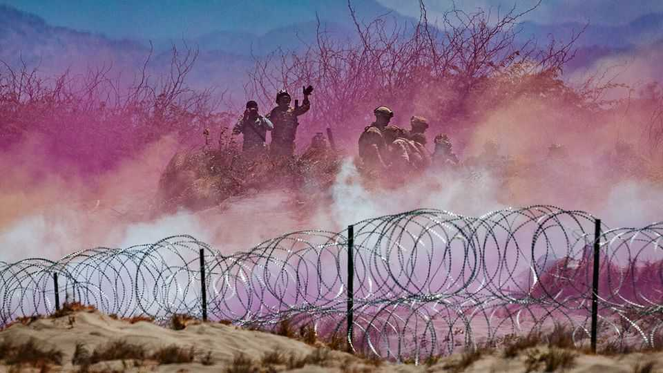

China is testing America’s defence lines in Asia
The allies must work to strengthen themselves, but also to strengthen America’s commitment

Jul 30th 2026
A GROUP OF Chinese and Russian warships sailed side-by-side through Japan’s southernmost exclusive economic zone (EEZ) on July 19th. Japanese sailors observing from a vessel nearby photographed them holding exercises, fire spitting from a Chinese destroyer’s turret. It was the first time Japan had captured and publicised a Chinese live-fire drill inside its EEZ. The images themselves were grainy, but the message was clear: Chinese pressure is rising.
The incident was only the latest in a series of recent provocations against America’s Asian allies, in particular the Philippines, Japan and Australia. In late June the Chinese and Russian air forces conducted a joint flight of nuclear-capable bombers over the Sea of Japan and the East China Sea, before passing between Japan’s south-western isles into the Pacific Ocean, the second such passage since December. China has intensified coastguard patrols east of Taiwan. In early July it fired a ballistic missile from a submarine off its southern coast over the Philippines and into the Pacific Ocean—only the second time it has launched a ballistic missile into international waters since 1980. A few days later Chinese and Philippine sailors skirmished with oars and water cannon over two disputed islets in the South China Sea.
Growing Chinese assertiveness is nothing new. But a pattern has been noticeable since President Donald Trump met his counterpart, Xi Jinping, in South Korea last October and signalled a desire to improve relations, followed in May by a cordial meeting in Beijing. Mr Trump and many of his officials have since then contorted themselves to avoid uttering an ill word about China, and been slow to stand up for allies facing Chinese bullying, seemingly in the hope that three further summits planned for this year will thereby come off more smoothly. Mr Trump is ensnared in Iran, diverting resources and attention from the Pacific. Now China appears to be probing America’s defence lines and testing its commitments in the region.
Faced with an unreliable America and an aggressive China, America’s allies in Asia need to do three things to improve their security: strengthen themselves, strengthen their ties with each other and strengthen America’s commitment to them. Progress on the first two tasks has been substantial, though still insufficient. Australia, Japan and the Philippines are all raising their defence spending and modernising their armed forces; Australia and Japan are both offering aid to the Philippines to help build up its maritime defences.
But that will be too little if America chooses to be absent. In Europe uncertainty over American reliability triggers talk of Plan Bs. Even without America, the remaining 31 NATO members’ combined defence spending is more than three times that of Russia, their main adversary, and two of them—Britain and France—have nuclear weapons. But allies in Asia rightly understand that they are too small to form a coalition that can maintain the balance of power in their backyard. There is no NATO-style collective-security pact, only a series of bilateral security treaties with America. The cumulative defence spending of America’s treaty allies is less than half that of China; and none of them has nukes.
That makes the third task as essential as the first two. One strategy is to collaborate more deeply with the bits of the American system that still care about deterring China, such as the military brass. But credible deterrence must come from the top—and China hawks fret that Mr Trump seems to have lost all interest in getting tough on Chinese expansionism, not least because he has learned that China is willing to use its grip on the supply of rare earths as a chokepoint. Can he be persuaded to change his mind? Perhaps. Volodymyr Zelensky has convinced him, for example, that Ukraine does in fact hold some cards.
The best evidence that Mr Trump could flip on China again is that he has done so before. During his first term, he attacked China as the destroyer of American jobs and the thief of American intellectual property. He was egged on by Asian leaders such as Abe Shinzo, Japan’s late prime minister, who spent hours encouraging him to take a hard look at the military threat China poses.
Asian leaders need to make the case directly to the president that China threatens America’s position as the world’s leading superpower—and that its military ambitions go hand in glove with its industrial, technological and economic ambitions. If Mr Trump accepts that China remains a shrewd and potentially dangerous competitor, he may be willing to take a broader view of America’s interests in the Pacific. ■